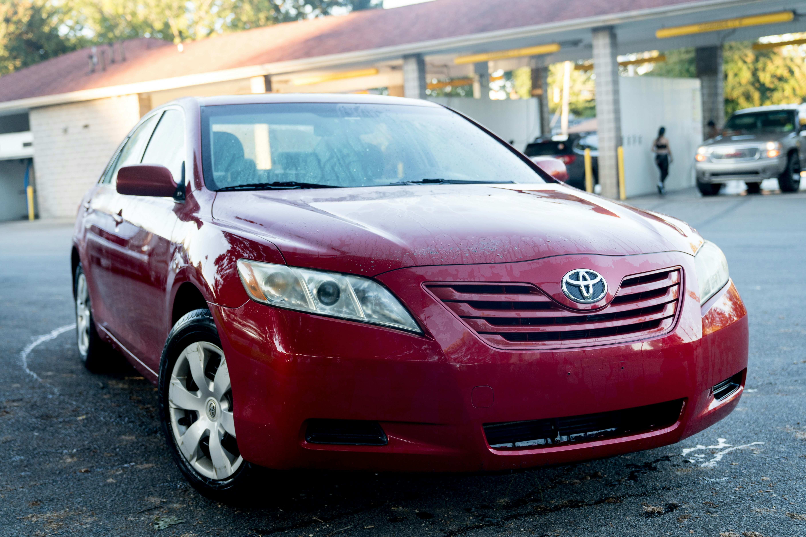

SUV · LONG-DISTANCE
Toyota Prado
Useful for airport transfers, interstate journeys, luggage-heavy trips and longer road travel where SUV space is helpful.
Request this categoryAAZ uses vehicle arrangements that suit the route, passenger count, luggage and purpose of the trip. Availability is confirmed for each booking.
Useful for airport transfers, interstate journeys, luggage-heavy trips and longer road travel where SUV space is helpful.
Request this category
For private city travel, business meetings, hotel movement and clients who prefer a refined executive cabin.
Request this category
A practical executive sedan for airport pickups, meetings, dinners and private point-to-point travel.
Request this category
A practical option for demanding road requirements and travel where utility matters as much as passenger transport.
Request this category
For longer trips, luggage and routes where extra space and a capable vehicle are valuable.
Discuss your route
Another sedan configuration for business, private travel and everyday executive movement, subject to availability.
Discuss your routeDepending on the assignment, passenger count and availability, AAZ can discuss SUV, executive sedan, pickup and multi-passenger options, including models such as Prado, Land Cruiser and Sienna.
Check vehicle availability